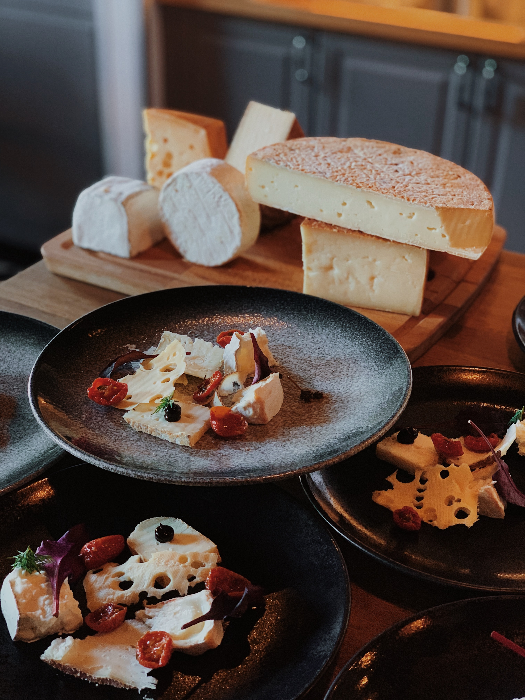

<mat-card>
        
    <mat-card-title>
        {{ recipe.name }}
    </mat-card-title>
    <mat-card-content>
        <p>{{ recipe.desc }}</p>
    </mat-card-content>
    <mat-card-actions>
        <button mat-icon-button><mat-icon>favorite</mat-icon></button>
    </mat-card-actions>
</mat-card>
